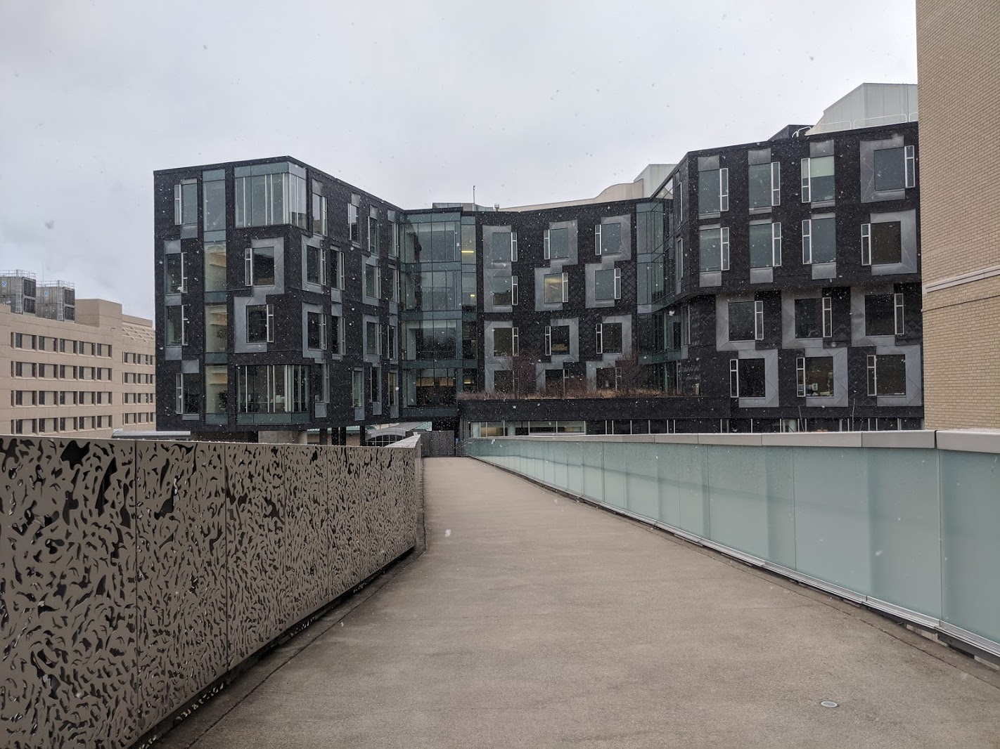

About Me
record scratch
freeze frame
Yeah, that's me. You're probably wondering how I ended up in this situation. Well, I'll just explain the "now" stuff and hopefully that'll be enough.
I'm a current Information Systems and Computer Science student at Carnegie Mellon University with a minor in Computational Finance.
I will be graduating in May of 2023, and as of the writing of this sentence I'm pursuing internships for the Summer of 2022.
I have strong proficiency in Java, ReactJS, SQL and Ruby on Rails for programming languages, and I am also very proficient in Linux and GitHub as technologies.
Additionally, I have worked with Python, VueJS, C, React Native and Spring Boot and have moderate proficiency in all of these languages.
I currently work as a Software Engineering Intern in the Software Engineer Program at JPMorgan Chase, where I'm working on developing the Omni Request Tool dashboard
in Angular, TypeScript, MySQL and Spring Boot. Additionally, I am working over the summer as a TA for 15-150, Principles of Functional Programming, designing lecture plans and
contributing to existing course materials on GitHub. If you want to learn more about them, please follow the link here.
I currently do not have any personal projects in the works, but this will change in the coming months so this section should be changed very soon. In general, though, the majority
of my project-based experience has been in frontend development, although I certainly want to branch out and learn more about backend and ML/AI work in the future.
In my spare time, outside of work and coding, I enjoy playing tennis (along with all the other racquet sports and volleyball), following the ATP Tour and the NBA, playing chess poorly and
taking photographs of Carnegie Mellon's campus as well as other locations I find enjoyable. You can see my favorite photo I've taken ever as the background for this website,
but all of the other photos in the other cards will also be photos I have taken myself. I don't consider myself a professional photographer, but I love being able to capture
the wonder of our planet, or at least the limited view I have of it.
If you want to contact me for any reason, you can find my email, LinkedIn and GitHub here. Thank you again for visiting my website!
Experiences
-
SWE Intern @ JPMorgan Chase
June 2021 - August 2021
As a current Software Engineering Intern in the Software Engineer Program at JPMC, I have the privilege of working on the Omni Request Tool Application. The internship project is
to build out the dashboard of this application, which involves working on widget development and database integration. Thus far, I have created a top bar for the widgets that has dynamic resizing,
refresh, trash and minimization icons, along with minimization and expansion capabilities for the widget. In addition, I am currently working on integrating the existing MySQL database with the frontend
via Rest API calls to filter the ages of specific tasks in a widget. The buttons for this filtering are dynamically resizable based on the number of tasks in each given bucket, and this functionality
involves the use of the entire stack.
This section is currently incomplete, as my internship has not yet completed, but I plan to add more when more things are completed.
-
15-150 TA @ CMU
January 2021 - August 2021
At the end of this summer, I will have TAed 15-150 (Principles of Functional Programming) for two consecutive semesters. As a Teaching Assistant, I
develop weekly lesson plans and teach 90 minute labs on the topics of Functional Programming that are taught, which have a wide range of uses in both
academia and conventional industry languages. These topics include Higher Order Functions, Continuation Passing Style and Induction. In addition to this,
I have contributed to the GitHub repositories for course material, including updating homeworks and labs in LaTeX and playtesting existing homeworks. Finally,
I hold weekly office hours for 3 hours to allow students to ask conceptual and homework questions on the topics of that week.
-
Research Assistant @ CMU's Human-Computer Interaction Institute
September 2020 - December 2020
In this role, I used Vue, HTML, CSS and Lumilo detectors to create and design an in-depth dashboard that analyzed and displayed information about students doing problem sets in a dashboard for teachers. The detectors allowed teachers to see the most recent problem that the students had worked on, as well as the progress made throughout a given problem set.
The deep dive of this dashboard that I worked on allows teachers to see the amount of time students have taken on a problem set, along with the number of problems completed, correct without hints, correct with hints, and incorrect problems. The teachers can also see the students' progress throughout all of the problem sets so far.
Projects
-
StudySmart
February 2020
StudySmart was created for TartanHacks 2020. It uses Microsoft Azure, Kismet API, 2 Raspberry Pis, JVectorMap, HTML, CSS and JS. For the project, we used the Pis and Kismet to packet-sniff the routers on campus and display data of how crowded a room is. This data was logged and displayed on a map using JVectorMap, which takes in an SVG file (Scalable Vector Graphics) and outputs an HTML-compatible map. This map, along with the data, was shown on a website using Microsoft Azure.
This project was a Top 6 competitor at TartanHacks 2020 and won Best Beginner Hack by BNY Mellon.
View the Devpost link for more in-depth information.
-
Ohio Humanities Website
October 2020
In this hackathon project for Code for Good 2020, we were tasked with creating an interactive website for the nonprofit Ohio Humanities that would allow them to reach more people of various ages. In order to do this, I used NodeJS to display user reactions to messages and comments underneath content released by Ohio Humanities, as well as allowing them to see data gathered from their users in charts via ChartsJS. These features were tested with dummy data generated and used via SQLite. We placed second with this project in our division for CFG 2020.
-
CourseMate
July 2020 - August 2020
This app was made in response to the coronavirus pandemic, especially as students will be transitioning to remote learning for at least a full semester and freshmen won't be able to have as many interactive experiences on campus as before. This app allows students to connect with other people in their lectures and recitations, and reach out to those students to either rekindle old friendships that may have died out over time, or to develop new connections with students going through the same experience as you.
This app was made with React Native and tested with Expo. I utilized Adobe Illustrator to create the logo of the app, which can be seen on the login and signup pages, and we used Firebase to store user information. This project was completed in August 2020.
Links (And Photos)
-
An unblurred look at what I consider to be the best photo I have ever taken.
-

While the background to this website is what I consider to be the best photo I have ever taken, this is my favorite photo. I love snow, and so capturing this wonderful photo of one of the roads through campus was a wonderful moment.
-

Like I mention elsewhere, I love snow, and it is in fact my favorite form of precipitation (yes, I rank precipitation). That's why getting a photo of the Gates-Hillman Center for the School of Computer Science at CMU, my favorite building at CMU, with snow falling in front of it is one of my favorite photos.